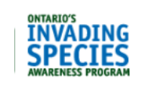
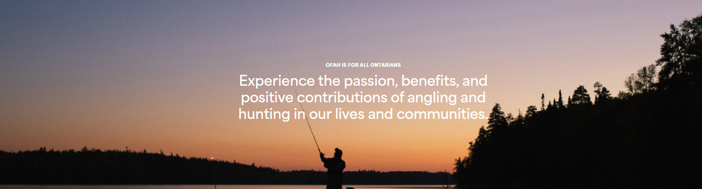

OFAH meetings are 1st Monday of the month at 7pm.
No meetings in July & August.
Join OFAH Now!
Our OFAH group at Windsor Sports Men’s Club pays for a portion of your OFAH membership.
(Must be a member).
Join OFAH for $25.00 / year. Standard OFAH membership is $55.00 / year.
Dive into our commitment to advocating for sustainable fishing opportunities across Ontario. Our efforts are aimed at ensuring healthy waters and abundant fisheries for future generations. Join us in influencing policies that benefit fishing and protect our aquatic environments.
Welcome to the world of hunting with OFAH, where we aim to connect people to the outdoors through responsible hunting. Whether you’re new or seasoned, we’re dedicated to supporting you with safety tips, regulatory guidance and access to resources.
Join us to enhance your skills and advocate alongside us for sustainable hunting opportunities and wildlife conservation.
The OFAH plays a pivotal role in conservation advocacy across Ontario, spearheading initiatives that positively impact the province’s diverse ecosystems, fish and wildlife populations and the habitats that support them. Through many levels of collaboration with government agencies, conservation partners, local communities, and volunteers, the OFAH strives to protect and enhance habitats crucial to fish and wildlife. A big part of that is advocacy work that is geared toward sustainable management practices that balance the needs of outdoor enthusiasts with long-term conservation goals, ensuring future generations can continue to enjoy Ontario’s natural resources.
The OFAH engages in a wide range of conservation projects, from habitat restoration and enhancement to scientific research and advocacy for policy reforms. The on-the-ground work is supported by dedicated members, who contribute their time and expertise to the initiatives that are guided by sound science and that OFAH advocacy work.
Examples of some of the on-the-ground work includes OFAH work alongside the Central Lake Ontario Conservation Authority (CLOCA) to enhance wetland habitats critical for waterfowl and other wildlife species. CLOCA’s efforts align with OFAH’s commitment to habitat restoration and conservation, ensuring these vital ecosystems remain resilient for future use.
Additionally, OFAH works closely with organizations like the Couchiching Conservancy, focusing on protecting and restoring important habitats. Partnerships like this one enhances habitat connectivity for wildlife species, and go a long way toward facilitating sustainable land management practices and community engagement initiatives.
Together, these collaborations are just two of many examples that shine a bright light on OFAH’s dedication to promoting responsible stewardship of Ontario’s natural resources.
The OFAH advocates for evidence-based decision-making that prioritizes conservation, ensuring the sustainable management of Ontario’s natural resources. This advocacy includes influencing policies that balance conservation goals with opportunities for outdoor recreational activities, such as hunting and fishing, which are integral to Ontario’s cultural and economic fabric. Through rigorous scientific research and collaboration with government bodies and stakeholders, OFAH strives to shape legislation and regulations that support biodiversity conservation and habitat preservation.
The OFAH’s education and outreach programs – like the Invading Species Awareness Program, for example — play a crucial role in empowering Ontarians to actively participate in conservation efforts as well educate the public about the importance of maintaining ecological integrity and sustainable resource use practices.
By fostering a deeper understanding of environmental issues, the OFAH advocacy helps cultivate a community of informed Ontarians who get the importance of conservation today and into the future. This collective commitment enhances the resilience of ecosystems and ensures future generations can continue to enjoy and benefits that come from Ontario’s natural landscapes and fish and wildlife habitats.
